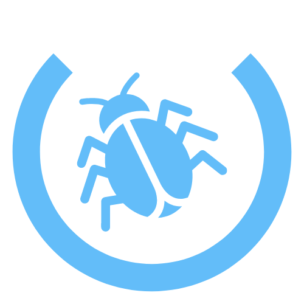

Bugs and Troubleshooting:
Please contact the support team via email at ntang1@luc.edu, gtimoteo@luc.edu, or msantos@luc.edu if you run into any performance bugs or application issues!
Food Metadata:
Currently the Calorie Tracker utilizes the U.S. Department of Agriculture's FoodData Central(FDC) database to agregate its caloric data. For more information on specific nutrition information, please visit https://fdc.nal.usda.gov .